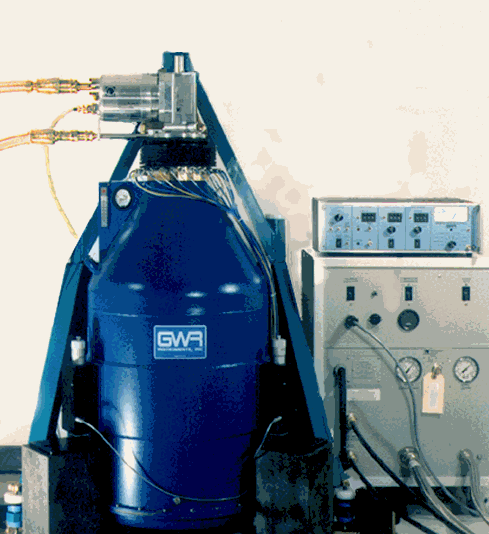

| software |
| home page |
| You can use the links at left to navigate around the site. TO TAKE A WEB-BASED PERSONALITY TEST or to participate in an online PSYCHOLOGY EXPERIMENT, select your study from the online testing page. The job analysis pages contain documents, data, and software dealing with the job analysis (JA) and classification research we've done at Virginia Tech. After you've looked around, you can use the sign-in form to give me feedback , if you wish. . |
|  |